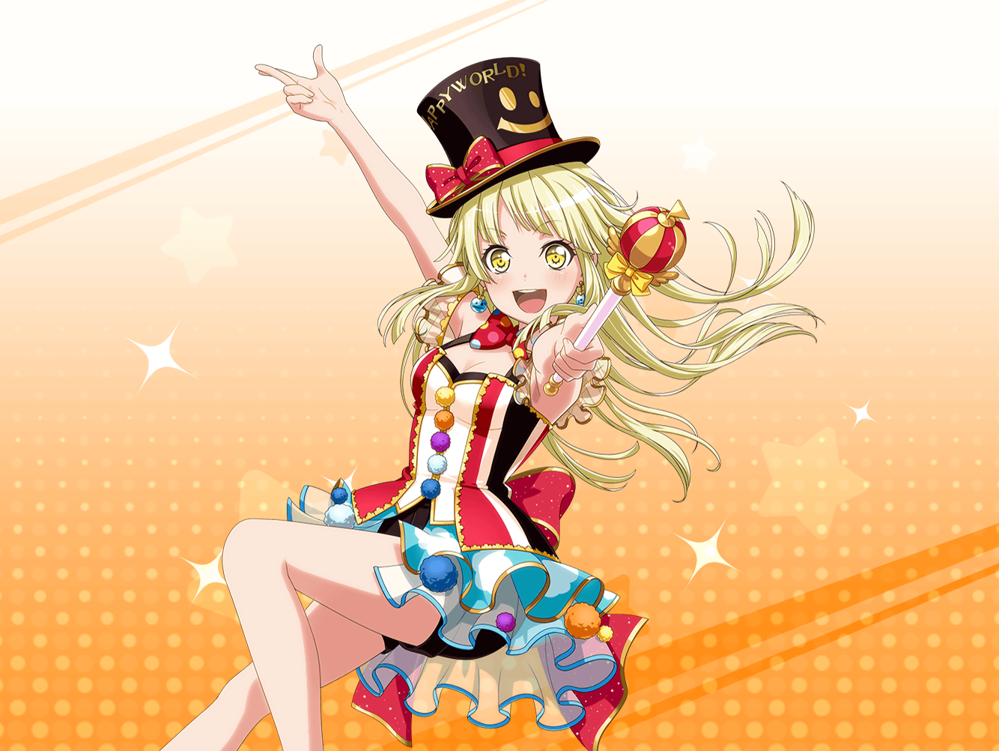

弦巻家
こころ
それじゃあ、さっそく新しいライブ衣装を決めるための
会議を始めるわよっ！
美咲
……あたしとこころ以外、誰もいないけど。
まあ、無理もないか。
この会議自体が突発的だったし
こころ
みんな、都合がついたら来るって言ってくれたわ。
だから、その前に案をいくつか考えておきましょう！
美咲
まあ、案を出すぐらいならあたしとこころだけでもいいのかな。
最終的には、みんなで決めればいいし
こころ
そうよ、そういうこと！
それじゃあ早速、案を出していくわよっ！
美咲
いきなり言われても……こころは、
こういう衣装が着たい！ とかそういうのあるわけ？
こころ
そうね、楽しい衣装がいいわ！
美咲
……そういう抽象的なのじゃなくてさ、
もっとこう具体的な案が聞きたいんだけど。
……って、こころに言っても意味ないか
美咲
じゃあ、まずはこころにとって楽しいことを教えて。
そこから絞り込んでいこう
こころ
あら、あたしにとって楽しいことじゃなくて
みんなにとって楽しいことを考えないといけないわ
こころ
みんなが笑顔になれるような……そういう、楽しいこと！
だから美咲、あなたが楽しいと思うことをいっぱい
教えてちょうだい。あたしの思う楽しいことも教えるから
美咲
いきなり楽しいことって言われても……
うーん、なかなか思いつかないかな
美咲
ちなみに、参考にならないかもだけど
こころの思う楽しいことって？
こころ
日向ぼっこをしながらお昼寝をしたり、
お菓子を食べながら絵本を読んだり、
そういうことが楽しいわ！
美咲
意外と地味……まあ、楽しいかもしれないけど。
でもそれじゃあ、衣装にしづらいでしょ。
もっとわかりやすいモノやコトの方がいいと思う
美咲
例えば……遊園地とかお祭りとか、そうやって
イメージできる方が衣装デザインも考えやすいんじゃないの？
こころ
遊園地……お祭り……！
いいわね、楽しそうだわ！
美咲
いや、さっきのは例えだから。
他になにかないかな？
こころ
いっぱいあるわよ！
マジックとか。
見てるとわくわくするでしょう？
こころ
そうよ、マジックよ！
あたしたちがマジシャンになって、
みんながずっと笑顔でいられる魔法をかけたいわ！
美咲
（いや、マジシャンは魔法使えないから。
マジックしてるだけだから）
こころ
ステキね！
みんなでマジックをすればきっと世界中を笑顔にできるわっ
こころ
前にもマジックをして病院の子供達を笑顔にできたでしょう？
だからもっともっとたくさんの人の前でマジックを披露しながら
ライブをすれば笑顔がたくさんになるわ！
美咲
もうそれマジシャンだかバンドなのかわかんないってば
こころ
なんだっていいのよ！
世界を笑顔にできれば
こころ
今度はもっとすごいことをしましょう！
ミッシェルの空中浮遊とかどうかしら？
楽しいわよ！
美咲
見てる分にはね……！
こころ
きっとミッシェルだってやりたがると思うわ！
だって空を飛べるのよ？
楽しいに決まってるじゃない！
美咲
んー、それじゃあ、こころが飛びなよ……
こころ
そうね、それもいいかもしれないわ！
それじゃあ新しい衣装はマジックをイメージしましょう！
美咲
え！？ 決定！？
こころ
だってマジック楽しいじゃない！
きっと楽しい衣装になるわね
美咲
待って待って待って。
マジックが楽しいのは認める。
でも決定するのはまだ早いよ。みんなの意見も聞かないと
こころ
もちろんだわ。
だってみんなが楽しいと思わなければ意味がないもの
こころ
でも、きっと薫もはぐみも花音も賛成してくれると思うわ！
前にマジックをやったときだって、みんな楽しそうだったし！
美咲
（あのときはスーツの人達が
だいぶ頑張ってくれてたからなぁ……）
美咲
（もし新衣装がマジックになったら
またあの人達、頑張んなきゃなんだろうな）
美咲
（それは同情するけど……マジックの衣装は悪くないかな。
わけわかんないテーマよりは、わかりやすいし）
こころ
ところで、美咲はどうかしら？
マジックの衣装について
美咲
悪くはないと思うよ。
イメージもしやすいし
こころ
よかったわ！
あ、ミッシェルの意見も聞かないといけないわね。
早く全員がそろって衣装会議をしたいわ！
美咲
いや、ミッシェルの意見はさっき言ったんだけど……
……って、まあいいか
美咲
新衣装、どんなのになるのか楽しみだね、こころ